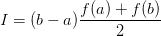
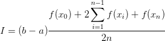
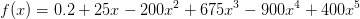
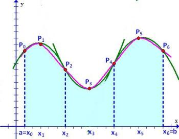
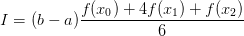
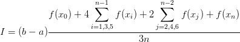

Week.14 : R 언어를 이용한 수치해석(수치 적분) Numerical Methods with R (Numerical Integration)
Table of ContentsR 언어를 이용한 수치해석(수치 적분) Numerical Methods with R (Numerical Integration)
적분 : 부분들을 모아 전체가 되게 함, 통합함, 총량.
합성 사다리꼴 공식 Composite Trapezoid Equation


합성공식

I : 적분값
a : 시점
b : 종점
xi : 분점
예제 Example

a = 0, b = 0.8, n=20
실제 적분값 : 1.640533
rm(list = ls()) # Remove all variable
f <- function(x) {
y <- 0.2 + 25*x - 200*x^2 + 675*x^3 - 900*x^4 + 400*x^5
return(y)
}
trapz <- function(a,b,n){
fsum <- sum(f(seq(a, b, length=n)[2:(n-1)]))
i <- (b-a) * (f(a)+2*fsum+f(b)) /(2*n)
return(i)
}
a <- 0
b <- 0.8
n <- 20
i <- trapz(a,b,n)
i
output : 1.551778
Composite Simpson 1/3 Equation
Simpson 1/3 Equation은 Simpson 공식에 대한 적분을 취해 얻은 공식을 이용한다. 1/3 이라는 숫자는 식에서 간격 h가 3으로 나뉘어진 사실에서 비롯된다.


I : 적분값
a : 시점 [x0]
b : 종점 [x2]
x2 : 분점
합성공식

I : 적분값
a : 시점 [x0]
b : 종점 [xn]
xi : 분점
예제 Example
a = 0, b = 0.8, n=20
실제 적분값 : 1.640533
rm(list = ls()) # Remove all variable
f <- function(x) {
y <- 0.2 + 25*x - 200*x^2 + 675*x^3 - 900*x^4 + 400*x^5
return(y)
}
simpson13 <- function(a,b,n,f){
xtemp <- seq(a, b, length=n)[2:(n-1)]
m <- length(xtemp)
odd <- seq(1,m,2)
odd.sum <- 0
even <- seq(2,m,2)
even.sum <-0
for (j in odd) {
odd.sum <- odd.sum + f(xtemp[j])
}
for (k in even) {
even.sum <- even.sum + f(xtemp[k])
}
i <- (b-a) * (f(a)+4*odd.sum + 2*even.sum +f(b)) /(3*n)
return(i)
}
a <- 0
b <- 0.8
n <- 20
i <- simpson13(a,b,n,f)
ioutput : 1.548837
Reference